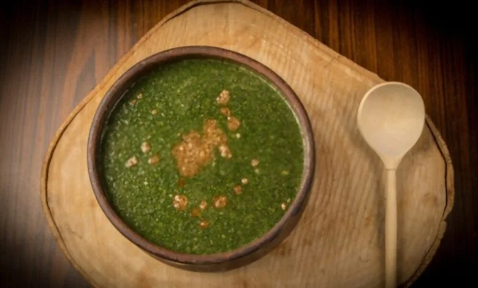
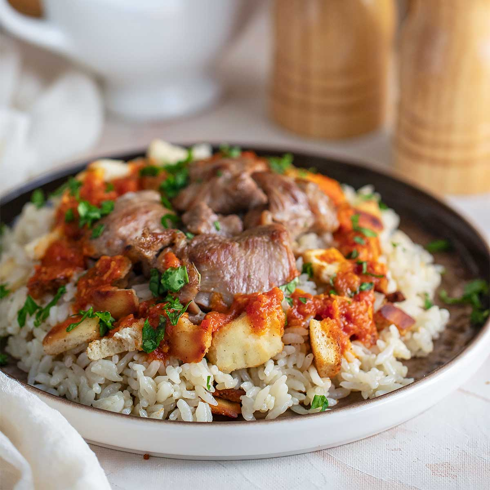

Egyptian Koshary Recipe

Ingredients:
For the Koshary:
- 1 cup rice
- 1 cup lentils (brown or green)
- 1 cup macaroni (small pasta like ditalini)
- 1 cup chickpeas (cooked or canned)
- 2 large onions, thinly sliced
- 2 tablespoons vegetable oil
- Salt, to taste
For the Tomato Sauce:
- 2 cups tomato sauce
- 2 cloves garlic, minced
- 1 tablespoon vinegar
- 1 teaspoon cumin
- 1 teaspoon ground coriander
- Salt and pepper, to taste
- 1 tablespoon vegetable oil
For the Spicy Sauce (optional):
- 1/2 cup tomato sauce
- 1 tablespoon chili powder (adjust to taste)
- 1 clove garlic, minced
- 1 tablespoon vinegar
- Salt, to taste
Instructions:
Cook the Lentils:
- Rinse the lentils and place them in a pot with enough water to cover them.
- Bring to a boil, then reduce the heat and simmer for about 20-25 minutes, or until the lentils are tender. Drain and set aside.
Cook the Rice:
- In another pot, add 1 cup of rice with 2 cups of water and a pinch of salt.
- Bring to a boil, then reduce the heat to low, cover, and simmer until the rice is cooked (about 15-20 minutes).
Cook the Macaroni:
- Boil the macaroni according to the package instructions until al dente. Drain and set aside.
Prepare the Crispy Onions:
- In a skillet, heat 2 tablespoons of vegetable oil over medium heat.
- Add the thinly sliced onions and fry until golden brown and crispy. Remove from the oil and drain on paper towels.
Prepare the Tomato Sauce:
- In a saucepan, heat 1 tablespoon of vegetable oil over medium heat.
- Add the minced garlic and cook until fragrant.
- Add 2 cups of tomato sauce, 1 tablespoon of vinegar, 1 teaspoon each of cumin and ground coriander, and salt and pepper to taste.
- Simmer for about 10-15 minutes until the sauce thickens.
Prepare the Spicy Sauce (optional):
- In a small saucepan, combine 1/2 cup tomato sauce, 1 tablespoon chili powder, 1 minced garlic clove, 1 tablespoon vinegar, and salt to taste.
- Simmer for about 5-10 minutes.
Assemble the Koshary:
- In a large serving dish, layer the cooked rice, lentils, and macaroni.
- Top with chickpeas and pour the tomato sauce over the top.
- Sprinkle the crispy onions over the dish.
- Serve with the spicy sauce on the side, if desired.
Enjoy your homemade Egyptian Koshary!
Egyptian Fattah Recipe

Ingredients:
- 1 pound fresh or frozen molokhia leaves, finely chopped
- 6 cups chicken or vegetable broth
- 1 tablespoon butter or ghee
- 5 garlic cloves, minced
- 1 teaspoon ground coriander
- Salt and pepper to taste
- Lemon wedges for serving
Instructions:
Prepare the Molokhia:
- If using fresh molokhia leaves, rinse and finely chop them.
- If using frozen molokhia, let it thaw.
Cook the Soup:
- In a large pot, bring the broth to a boil.
- Add the molokhia to the broth and reduce the heat to a simmer. Cook for about 5-10 minutes,
stirring occasionally.
Prepare the Garlic Mixture:
- In a small pan, melt the butter or ghee over medium heat.
- Add the minced garlic and ground coriander. Cook until the garlic is golden brown.
Combine and Season:
- Add the garlic mixture to the molokhia soup.
- Season with salt and pepper to taste.
- Simmer for another 5 minutes.
Serve:
- Serve hot with rice and lemon wedges on the side.
Enjoy your homemade Egyptian Molokhia!
Egyptian Fattah Recipe

Ingredients:
For the Base:
- 1 pound beef or lamb, cut into cubes
- 1 onion, quartered
- 1 bay leaf
- 1 teaspoon salt
- 2 cups rice
- 4 pieces of pita bread, toasted and cut into squares
For the Sauce:
- 2 tablespoons butter or ghee
- 5 garlic cloves, minced
- 1/4 cup vinegar
- 1 cup beef broth
- Salt and pepper to taste
Instructions:
Cook the Meat:
- In a large pot, cover the meat with water. Add the quartered onion,
bay leaf, and salt. Bring to a boil, then reduce heat and simmer until the meat is tender.
Remove the meat and set aside. Strain and reserve the broth.
Prepare the Sauce:
- In a pan, melt the butter or ghee over medium heat.
- Add the minced garlic and cook until golden.
- Add the vinegar and let it simmer for a minute.
- Add the beef broth and simmer for a few minutes. Season with salt and pepper.
Assemble the Fattah:
- In a serving dish, place the toasted pita bread squares as the bottom layer.
- Top with a layer of rice.
- Add the cooked meat on top of the rice.
- Pour the garlic vinegar sauce over the dish.
Serve:
- Serve hot, ensuring each layer is visible and can be savored together.
Enjoy your homemade Egyptian Fattah!